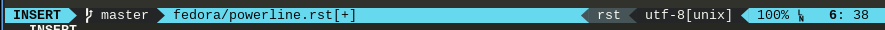

Powerline¶
Powerline is a statusline plugin that will work for both vim and terminal emulators. It makes your statusline look like this:
Installing via dnf¶
Just do:
dnf install powerlineThe RPM will also install the Powerline fonts.
Then consult the powerline documentation for using it with your program of choice. For vim and tmux, RPMs are available that already handle the configuration.
Enabling powerline (installed via dnf)¶
Fish¶
Add this to ~/.config/fish/config.fish:
set fish_function_path $fish_function_path "{repository_root}/powerline/fish"
powerline-setupIf you used the dnf method, {repository_root} will be
/usr/share/.
vim¶
The package is called vim-powerline. Once you install the RPM, no
extra configuration or steps are necessary. Again, all of the files are
installed to /usr/share/.
Note
Because Fedora is trying to go full python 3, the powerline package is only
compiled with python 3 support. In order to force vim to use python 3,
place this at the top of your ~/.vimrc:
if has('python3')
endifNote you risk breaking any vim plugins that require python 2.
Credit goes to https://robertbasic.com/blog/force-python-version-in-vim/
tmux¶
The package is called tmux-powerline.